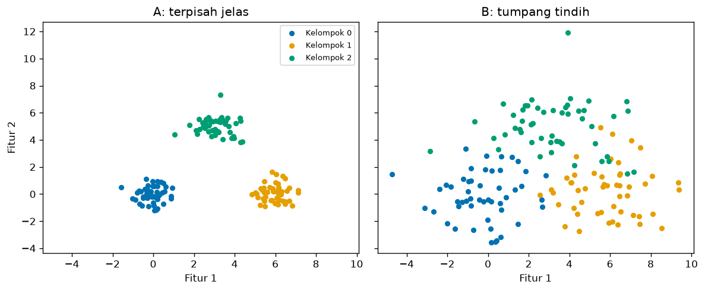
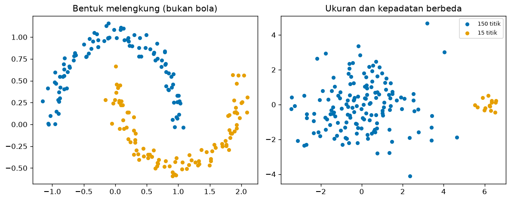
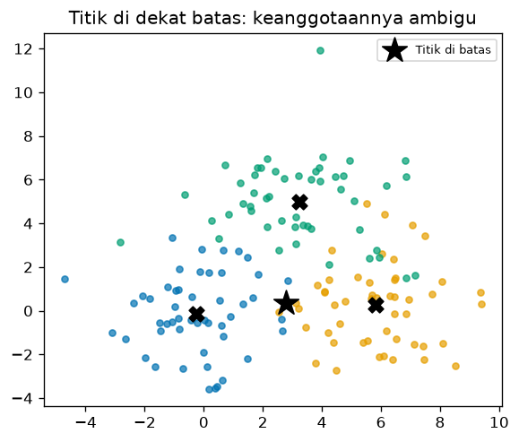

Bab 2 — Understanding Clusters¶
Learning Objectives¶
Setelah mempelajari bab ini, kamu mampu:
- Menjelaskan apa itu cluster dan ciri-ciri kelompok yang baik.
- Menjelaskan intra-cluster similarity dan inter-cluster dissimilarity.
- Menghitung compactness (kekompakan) dan separation (keterpisahan) sebuah kelompok.
- Menjelaskan cluster boundary, density, bentuk, dan ukuran kelompok.
- Menjelaskan cluster membership dan mengapa titik di batas kelompok bersifat ambigu.
- Membedakan kelompok yang terpisah jelas dari kelompok yang tumpang tindih lewat angka dan gambar.
Introduction¶
Di Bab 1 kita meminta komputer membuat lima kelompok pelanggan, dan hasilnya tampak masuk akal. Tetapi apa sebenarnya yang membuat sebuah kelompok baik? Apakah cukup asal titik-titiknya berdekatan? Bagaimana kalau dua kelompok saling menumpuk? Bagaimana kalau bentuknya bukan bola?
Bab ini mengajarkan bahasa untuk menggambarkan kelompok: kekompakan, keterpisahan, kepadatan, bentuk, ukuran, dan keanggotaan. Dengan bahasa ini kamu bisa melihat sebuah hasil clustering dan menjelaskan mengapa ia bagus atau bermasalah, sebelum kita mempelajari algoritma di Level 4 dan metrik evaluasi di Level 5.
Fundamental Concepts¶
| Istilah | Arti |
|---|---|
| Cluster | Sekumpulan data yang lebih mirip satu sama lain dibanding dengan data di luar kelompoknya |
| Intra-cluster similarity | Kemiripan di dalam satu kelompok. Kelompok yang baik: tinggi |
| Inter-cluster dissimilarity | Perbedaan antar kelompok. Kelompok yang baik: tinggi |
| Compactness (kekompakan) | Seberapa rapat anggota kelompok mengumpul di sekitar pusatnya |
| Separation (keterpisahan) | Seberapa jauh satu kelompok dari kelompok lain |
| Cluster boundary | Daerah perbatasan tempat satu kelompok berganti ke kelompok lain |
| Density (kepadatan) | Seberapa rapat titik-titik di suatu daerah |
| Membership (keanggotaan) | Kelompok mana yang memiliki sebuah titik data |
Istilah sinonim
Cluster sering disebut juga kelompok, gerombol, atau segmen (terutama di pemasaran). Di bab ini kita memakai "kelompok" dan "cluster" bergantian.
Detailed Explanation¶
Apa yang membuat kelompok baik?¶
Kelompok yang baik punya dua sifat sekaligus:
- Rapat di dalam. Anggotanya mirip satu sama lain (intra-cluster similarity tinggi). Dalam bahasa jarak: jarak antar anggota kecil.
- Berjauhan dari luar. Anggotanya berbeda dari anggota kelompok lain (inter-cluster dissimilarity tinggi). Dalam bahasa jarak: jarak antar kelompok besar.
Kamu butuh keduanya. Kelompok yang rapat tetapi menempel pada kelompok lain sulit dipisahkan, dan kelompok yang berjauhan tetapi longgar di dalam kurang bermakna.
flowchart LR
A[Kelompok baik] --> B[Rapat di dalam<br/>compactness tinggi]
A --> C[Berjauhan dari luar<br/>separation tinggi]
B --> D[Anggota mirip]
C --> E[Mudah dibedakan]Kelompok terpisah jelas vs tumpang tindih¶
Gambar berikut dibuat dari data sintetis (kodenya ada di bagian Python Implementation). Pusat ketiga kelompok sama di kedua panel. Yang berbeda hanya seberapa menyebar anggotanya.

- Panel A: tiga gerombol rapat dan berjauhan. Mata kita langsung menemukan batasnya.
- Panel B: gerombol yang sama, tetapi menyebar, sehingga saling bersinggungan. Di daerah tengah, kita sulit mengatakan sebuah titik milik kelompok yang mana.
Data nyata lebih sering mirip panel B daripada panel A. Karena itu, kemampuan menilai kualitas kelompok tidak bisa hanya dengan mata.
Compactness: seberapa rapat?¶
Kekompakan sebuah kelompok bisa diukur dari rata-rata jarak setiap anggota ke pusat kelompoknya. Makin kecil angkanya, makin rapat. Pusat kelompok (centroid) dibahas lengkap di Bab 3. Untuk sekarang, anggap saja ia adalah titik rata-rata semua anggota.
Separation: seberapa berjauhan?¶
Keterpisahan bisa diukur dari jarak antara pusat dua kelompok. Makin besar, makin terpisah. Namun angka ini harus dibandingkan dengan kekompakan. Jarak pusat 6 terasa jauh bila kelompoknya rapat (rata-rata jarak ke pusat 0,7), tetapi terasa dekat bila kelompoknya longgar (rata-rata jarak ke pusat 2,2). Karena itu kita sering memakai rasio keduanya.
Cluster boundary: batas yang kabur¶
Batas kelompok adalah daerah tempat sebuah titik hampir sama dekatnya ke dua kelompok. Pada kelompok yang terpisah jelas, batasnya berupa ruang kosong. Pada kelompok yang tumpang tindih, batasnya berupa daerah padat yang ambigu, dan titik di situ mudah berpindah kelompok jika algoritma atau pengaturannya sedikit berubah.
Density: kepadatan¶
Kepadatan menyatakan seberapa rapat titik di suatu daerah. Dua kelompok bisa punya pusat yang sama, tetapi yang satu padat dan yang lain jarang. Salah satu cara sederhana mengukurnya adalah rata-rata jarak setiap titik ke tetangga terdekatnya: makin kecil, makin padat. Kepadatan menjadi dasar algoritma jenis lain (misalnya DBSCAN di Level 4).
Shape dan size: bentuk dan ukuran¶
Kelompok tidak harus berbentuk bola dan tidak harus berukuran sama.

- Bentuk melengkung (kiri): dua bulan sabit yang saling mengait. Pusat (rata-rata) kedua bulan sabit hanya berjarak sekitar 1,26 (di \( (0{,}00;\,0{,}64) \) dan \( (1{,}00;\,-0{,}12) \)), padahal kedua bentuk membentang sekitar 3 satuan. Pusat tidak mencerminkan lengkungan, sehingga ukuran yang bergantung pada pusat menyesatkan di sini.
- Ukuran dan kepadatan berbeda (kanan): satu kelompok besar yang longgar dan satu kelompok kecil yang rapat. Banyak algoritma cenderung menganggap kelompok berukuran mirip, sehingga kasus seperti ini sulit.
Ini alasan mengapa tidak ada satu algoritma yang cocok untuk semua data. Kamu akan melihatnya di Level 4.
Membership: siapa milik siapa?¶
Pada hard clustering (yang kita pakai sekarang), setiap titik dimiliki tepat satu kelompok. Biasanya titik masuk ke kelompok dengan pusat terdekat. Titik di dekat batas hanya sedikit lebih dekat ke satu kelompok dibanding yang lain, sehingga keanggotaannya rapuh. Ada juga soft clustering yang memberi tiap titik derajat keanggotaan pada beberapa kelompok sekaligus (misalnya 60% kelompok A dan 40% kelompok B). Itu dibahas di Level 4.
Mathematical Foundation¶
Misalkan kelompok \( C_k \) berisi \( n_k \) titik dan pusatnya (rata-rata anggotanya) adalah \( \mu_k \).
Compactness kelompok \( C_k \) (rata-rata jarak ke pusat):
Separation antara kelompok \( i \) dan \( j \) (jarak antar pusat):
Penjelasan simbol:
- \( \mathbf{x} \) adalah satu titik data (berupa daftar angka, misalnya pendapatan dan skor belanja).
- \( \mathbf{x} \in C_k \) dibaca "\( \mathbf{x} \) anggota kelompok \( C_k \)".
- \( \lVert \mathbf{a} - \mathbf{b} \rVert \) adalah jarak Euclidean antara \( \mathbf{a} \) dan \( \mathbf{b} \), yaitu jarak garis lurus. Rumusnya dibahas penuh di Bab 5. Untuk dua dimensi:
- \( \sum \) berarti "jumlahkan untuk semua anggota", dan \( \frac{1}{n_k} \) mengubah jumlah menjadi rata-rata.
Tujuan rumus: mengubah kesan visual ("rapat" dan "berjauhan") menjadi angka yang bisa dibandingkan.
Contoh hitung manual¶
Dua kelompok kecil, masing-masing dengan dua titik pada bidang dua dimensi:
- \( C_1 = \{(1,1), (3,1)\} \)
- \( C_2 = \{(7,5), (9,5)\} \)
Langkah 1: pusat tiap kelompok (rata-rata tiap koordinat).
- \( \mu_1 = \left(\frac{1+3}{2}, \frac{1+1}{2}\right) = (2, 1) \)
- \( \mu_2 = \left(\frac{7+9}{2}, \frac{5+5}{2}\right) = (8, 5) \)
Langkah 2: jarak tiap titik ke pusatnya.
- \( C_1 \): jarak \( (1,1) \) ke \( (2,1) \) adalah \( \sqrt{(1-2)^2 + (1-1)^2} = \sqrt{1} = 1 \). Jarak \( (3,1) \) ke \( (2,1) \) adalah \( \sqrt{1} = 1 \).
- \( C_2 \): jarak \( (7,5) \) ke \( (8,5) \) adalah 1, dan jarak \( (9,5) \) ke \( (8,5) \) juga 1.
Langkah 3: compactness (rata-rata jarak).
- \( \text{compactness}(C_1) = \frac{1+1}{2} = 1 \)
- \( \text{compactness}(C_2) = \frac{1+1}{2} = 1 \)
Langkah 4: separation (jarak antar pusat).
Interpretasi. Anggota tiap kelompok berjarak rata-rata 1 dari pusatnya, sedangkan kedua pusat berjarak 7,21. Rasionya \( 7{,}21 / 1 \approx 7{,}2 \): jarak antar kelompok sekitar tujuh kali lebih besar daripada "lebar" kelompok itu sendiri. Itu menandakan kelompok yang terpisah baik.
Python Implementation¶
Kita kerjakan dalam delapan langkah kecil. Setiap potongan kode diikuti penjelasannya. Skrip lengkapnya ada di examples/level-3/02_understanding_clusters.py, dan versi notebook-nya di notebooks/level-3/02-understanding-clusters.ipynb.
Konteks masalah: kita membandingkan dua dataset sintetis (satu terpisah jelas, satu tumpang tindih) memakai ukuran kekompakan, keterpisahan, dan kepadatan, lalu menerapkannya pada kelompok Mall Customers dari Bab 1.
Input yang diharapkan: tidak ada file khusus untuk data sintetis (dibuat di kode). Langkah terakhir memakai data/mall_customers.csv.
Langkah 1 — Buat data sintetis¶
import numpy as np
import pandas as pd
import matplotlib.pyplot as plt
from sklearn.datasets import make_blobs, make_moons
from sklearn.cluster import KMeans
COLORS = ["#0072B2", "#E69F00", "#009E73"]
# Dataset A: tiga gerombol berjauhan. Dataset B: tiga gerombol yang saling menumpuk.
centers = [(0, 0), (6, 0), (3, 5)]
XA, yA = make_blobs(n_samples=150, centers=centers, cluster_std=0.6, random_state=42)
XB, yB = make_blobs(n_samples=150, centers=centers, cluster_std=1.8, random_state=42)
print("Bentuk XA:", XA.shape, "| Bentuk XB:", XB.shape)
print("Jumlah anggota per kelompok (A):", np.bincount(yA))
Penjelasan:
import numpy as npmemanggil NumPy, pustaka untuk menghitung dengan larik (array) angka.make_blobsmembuat data buatan berupa gerombol titik. Kita memakainya supaya tahu pasti kelompok aslinya.make_moonsmembuat data berbentuk dua bulan sabit (dipakai di Langkah 6).COLORSadalah daftar tiga warna yang tetap terbedakan oleh pembaca buta warna.centers = [(0, 0), (6, 0), (3, 5)]menentukan pusat sebenarnya ketiga gerombol.make_blobs(n_samples=150, centers=centers, cluster_std=0.6, random_state=42): membuat 150 titik.cluster_stdmengatur sebaran tiap gerombol (kecil berarti rapat).random_state=42mengunci unsur acak. Hasilnya dua nilai:XA(koordinat titik) danyA(nomor kelompok asli).- Dataset B memakai pusat dan
random_stateyang sama tetapicluster_std=1.8, sehingga sebarannya lebih lebar dan saling menumpuk. np.bincount(yA)menghitung berapa titik di tiap kelompok.
Langkah 2 — Gambar kedua dataset¶
fig, axes = plt.subplots(1, 2, figsize=(10, 4.2), sharex=True, sharey=True)
for ax, X, y, title in [
(axes[0], XA, yA, "A: terpisah jelas"),
(axes[1], XB, yB, "B: tumpang tindih"),
]:
for k in range(3):
ax.scatter(X[y == k, 0], X[y == k, 1], s=20, color=COLORS[k], label=f"Kelompok {k}")
ax.set_title(title)
ax.set_xlabel("Fitur 1")
axes[0].set_ylabel("Fitur 2")
axes[0].legend(fontsize=8)
fig.tight_layout()
plt.show()
Penjelasan:
plt.subplots(1, 2, ..., sharex=True, sharey=True)membuat dua panel berdampingan dengan skala sumbu yang sama. Skala yang sama penting agar kita bisa membandingkan sebaran secara adil.for ax, X, y, title in [...]mengulang pekerjaan yang sama untuk dua panel, dengan data dan judul masing-masing.X[y == k, 0]artinya "koordinat pertama dari semua titik yang kelompoknyak".y == kmenghasilkan daftar benar/salah yang dipakai memilih baris.ax.scatter(...)menggambar titik, satu warna per kelompok.fig.tight_layout()merapikan jarak antar elemen.
Langkah 3 — Ukur kekompakan (compactness)¶
def compactness(X, y):
"""Rata-rata jarak setiap titik ke pusat kelompoknya, per kelompok."""
result = []
for k in np.unique(y):
members = X[y == k]
center = members.mean(axis=0)
dist = np.sqrt(((members - center) ** 2).sum(axis=1))
result.append(dist.mean())
return np.array(result)
print("Kekompakan dataset A:", compactness(XA, yA).round(2))
print("Kekompakan dataset B:", compactness(XB, yB).round(2))
Penjelasan:
def compactness(X, y):membuat fungsi: potongan kode yang bisa dipakai berulang. Ia menerima titikXdan nomor kelompoky.np.unique(y)mengambil daftar nomor kelompok tanpa pengulangan (0, 1, 2).members = X[y == k]memilih titik anggota kelompokk.center = members.mean(axis=0)menghitung pusat (rata-rata tiap kolom).axis=0berarti "turun sepanjang baris", jadi hasilnya satu rata-rata per kolom.members - centermengurangkan pusat dari setiap titik. NumPy melakukannya untuk semua baris sekaligus (disebut broadcasting).** 2mengkuadratkan,.sum(axis=1)menjumlahkan per baris (jumlah kuadrat selisih tiap koordinat), dannp.sqrtmengakarkan. Hasilnya jarak Euclidean tiap titik ke pusatnya.dist.mean()mengambil rata-ratanya: inilah compactness kelompok itu..round(2)membulatkan ke dua angka di belakang koma.
Langkah 4 — Ukur keterpisahan (separation)¶
def center_distances(X, y):
"""Jarak antar pusat kelompok untuk setiap pasangan kelompok."""
centers = np.array([X[y == k].mean(axis=0) for k in np.unique(y)])
pairs = {}
for i in range(len(centers)):
for j in range(i + 1, len(centers)):
pairs[(i, j)] = np.sqrt(((centers[i] - centers[j]) ** 2).sum())
return pairs
for name, X, y in [("A", XA, yA), ("B", XB, yB)]:
pairs = center_distances(X, y)
print(f"Jarak antar pusat dataset {name}:", {k: round(float(v), 2) for k, v in pairs.items()})
ratio = min(pairs.values()) / compactness(X, y).mean()
print(f" Jarak pusat terdekat / rata-rata kekompakan = {ratio:.2f}")
Jarak antar pusat dataset A: {(0, 1): 6.03, (0, 2): 5.95, (1, 2): 5.69}
Jarak pusat terdekat / rata-rata kekompakan = 7.76
Jarak antar pusat dataset B: {(0, 1): 6.08, (0, 2): 6.2, (1, 2): 5.41}
Jarak pusat terdekat / rata-rata kekompakan = 2.46
Penjelasan:
center_distancesmenghitung pusat tiap kelompok, lalu jarak antar pusat untuk setiap pasangan(i, j).- Dua
forbertingkat,for i ...lalufor j in range(i + 1, ...), menghasilkan tiap pasangan sekali saja (pasangan (0,1) dan (1,0) sama, jadi tidak diulang). pairs = {}adalah kamus (dictionary): menyimpan pasangan kelompok sebagai kunci dan jaraknya sebagai nilai.ratio = min(pairs.values()) / compactness(X, y).mean()membagi jarak pusat terdekat dengan rata-rata kekompakan. Rasio besar berarti kelompok jauh lebih terpisah daripada selebar kelompok itu sendiri.f"... {ratio:.2f}"adalah f-string: menyisipkan nilai ke teks.:.2fberarti dua angka di belakang koma.
Langkah 5 — Ukur kepadatan (density)¶
def mean_nearest_neighbor(X):
"""Rata-rata jarak setiap titik ke tetangga terdekatnya. Makin kecil, makin padat."""
diff = X[:, None, :] - X[None, :, :]
dist = np.sqrt((diff ** 2).sum(axis=2))
np.fill_diagonal(dist, np.inf)
return dist.min(axis=1).mean()
rng = np.random.default_rng(42)
padat = rng.normal(loc=(0, 0), scale=0.3, size=(60, 2))
jarang = rng.normal(loc=(0, 0), scale=1.5, size=(60, 2))
print("Jarak tetangga terdekat, kelompok padat :", round(mean_nearest_neighbor(padat), 3))
print("Jarak tetangga terdekat, kelompok jarang :", round(mean_nearest_neighbor(jarang), 3))
Jarak tetangga terdekat, kelompok padat : 0.063
Jarak tetangga terdekat, kelompok jarang : 0.422
Penjelasan:
X[:, None, :] - X[None, :, :]menghitung selisih setiap pasangan titik sekaligus. Hasilnya larik tiga dimensi: (titik pertama, titik kedua, koordinat).- Setelah dikuadratkan, dijumlahkan, dan diakarkan, kita punya matriks jarak: tabel jarak setiap titik ke setiap titik lain (dibahas di Bab 4).
np.fill_diagonal(dist, np.inf)mengisi diagonal (jarak titik ke dirinya sendiri, yaitu 0) dengan tak hingga, supaya titik tidak dianggap tetangga terdekat dirinya sendiri.dist.min(axis=1)mengambil jarak ke tetangga terdekat untuk tiap titik, lalu.mean()merata-ratakannya.np.random.default_rng(42)membuat pembangkit angka acak dengan seed tetap.rng.normal(loc, scale, size)mengambil titik acak berpusat dilocdengan sebaranscale.- Kita buat dua kelompok dengan jumlah titik sama (60) tetapi sebaran berbeda (0,3 dan 1,5).
Langkah 6 — Lihat bentuk dan ukuran¶
Xm, ym = make_moons(n_samples=200, noise=0.07, random_state=42)
rng = np.random.default_rng(42)
besar = rng.normal(loc=(0, 0), scale=1.6, size=(150, 2))
kecil = rng.normal(loc=(6, 0), scale=0.3, size=(15, 2))
fig, axes = plt.subplots(1, 2, figsize=(10, 4))
for k in range(2):
axes[0].scatter(Xm[ym == k, 0], Xm[ym == k, 1], s=20, color=COLORS[k])
axes[0].set_title("Bentuk melengkung (bukan bola)")
axes[1].scatter(besar[:, 0], besar[:, 1], s=20, color=COLORS[0], label="150 titik")
axes[1].scatter(kecil[:, 0], kecil[:, 1], s=20, color=COLORS[1], label="15 titik")
axes[1].set_title("Ukuran dan kepadatan berbeda")
axes[1].legend(fontsize=8)
fig.tight_layout()
plt.show()
Penjelasan:
make_moons(n_samples=200, noise=0.07, random_state=42)membuat 200 titik dua bulan sabit.noisemenambah sedikit getaran acak.besardankeciladalah dua kelompok acak: 150 titik yang longgar dan 15 titik yang rapat.plt.subplots(1, 2, ...)membuat dua panel: kiri bulan sabit, kanan dua kelompok berbeda ukuran.- Bagian lain sama seperti Langkah 2.
Langkah 7 — Keanggotaan di dekat batas¶
centers_B = np.array([XB[yB == k].mean(axis=0) for k in range(3)])
# Titik tepat di tengah antara pusat kelompok 0 dan 1 (bagian batas kelompok)
titik = (centers_B[0] + centers_B[1]) / 2 + np.array([0.0, 0.3])
dist = np.sqrt(((centers_B - titik) ** 2).sum(axis=1))
print("Titik uji:", titik.round(2))
print("Jarak titik ke pusat tiap kelompok:", dist.round(2))
print("Kelompok terdekat:", dist.argmin())
fig, ax = plt.subplots(figsize=(5.5, 4.5))
for k in range(3):
ax.scatter(XB[yB == k, 0], XB[yB == k, 1], s=18, color=COLORS[k], alpha=0.7)
ax.scatter(*titik, marker="*", s=300, color="black", label="Titik di batas")
ax.scatter(centers_B[:, 0], centers_B[:, 1], marker="X", s=100, color="black")
ax.set_title("Titik di dekat batas: keanggotaannya ambigu")
ax.legend(fontsize=8)
plt.show()
Titik uji: [2.79 0.36]
Jarak titik ke pusat tiap kelompok: [3.08 3.04 4.66]
Kelompok terdekat: 1

Penjelasan:
centers_Badalah pusat tiga kelompok dataset B, dihitung dengan rata-rata.titik = (centers_B[0] + centers_B[1]) / 2 + np.array([0.0, 0.3])membuat satu titik uji di tengah antara pusat kelompok 0 dan 1, lalu menggesernya sedikit ke atas. Titik ini sengaja ditaruh di batas.distadalah jarak titik uji ke tiap pusat, dandist.argmin()memberi nomor pusat terdekat. Itulah aturan keanggotaan pada hard clustering.- Bagian grafik menggambar titik uji sebagai bintang hitam dan pusat sebagai tanda
X.alpha=0.7membuat titik sedikit transparan agar tumpukan titik terlihat.
Langkah 8 — Terapkan pada Mall Customers¶
df = pd.read_csv("data/mall_customers.csv")
X = df[["Annual Income (k$)", "Spending Score (1-100)"]].to_numpy()
labels = KMeans(n_clusters=5, n_init=10, random_state=42).fit_predict(X)
table = pd.DataFrame(
{
"Jumlah": np.bincount(labels),
"Kekompakan": compactness(X, labels).round(1),
}
)
print(table)
Penjelasan:
- Kita memuat data dan memilih dua fitur seperti Bab 1, lalu
.to_numpy()mengubah tabel menjadi larik NumPy agar cocok dengan fungsicompactnesskita. KMeans(...).fit_predict(X)membuat lima kelompok (K-Means hanya alat bantu, lihat Bab 1).pd.DataFrame({...})membuat tabel ringkas berisi jumlah anggota dan kekompakan tiap kelompok.
Code Explanation¶
| Yang kamu lihat | Artinya |
|---|---|
X[y == k] |
Memilih baris yang kelompoknya k |
.mean(axis=0) |
Rata-rata per kolom, dipakai untuk mencari pusat |
.sum(axis=1) |
Jumlah per baris, dipakai menggabungkan selisih tiap koordinat |
np.sqrt(((a - b) ** 2).sum(axis=1)) |
Jarak Euclidean antara baris-baris a dan b |
def ...: |
Membuat fungsi agar perhitungan bisa dipakai berulang |
rng.normal(loc, scale, size) |
Titik acak bersebaran normal dengan seed tetap |
Pola umumnya: pilih kelompok → cari pusat → ukur jarak → bandingkan angka.
How to Run¶
Jalankan dari folder utama proyek (folder yang berisi mkdocs.yml):
Skrip membuat tiga gambar di docs/assets/level-3/. Untuk notebook:
Expected Output¶
Semua output berasal dari eksekusi nyata skrip (Python 3.14.10, NumPy 2.5.2, pandas 3.0.5, scikit-learn 1.9.0, matplotlib 3.11.1). Output setiap langkah ditampilkan langsung di bawah kodenya pada bagian Python Implementation.
Gambar keanggotaan di batas:
Interpretasi output¶
Kekompakan. Pada dataset A rata-rata jarak ke pusat sekitar 0,7 (0,68; 0,72; 0,79). Pada dataset B sekitar 2,2 (2,05; 2,16; 2,38), kira-kira tiga kali lebih longgar. Itu sesuai dengan cluster_std yang kita pakai (0,6 melawan 1,8).
Keterpisahan. Jarak antar pusat hampir sama di kedua dataset (sekitar 5,4 sampai 6,2), karena pusat sebenarnya kita buat sama. Tetapi rasio terhadap kekompakan sangat berbeda: 7,76 pada A dan 2,46 pada B. Jarak pusat yang sama terasa jauh pada A dan terasa dekat pada B. Inilah mengapa jarak antar pusat harus dibandingkan dengan lebar kelompok.
Kepadatan. Jarak ke tetangga terdekat 0,063 pada kelompok padat dan 0,422 pada kelompok jarang. Meski jumlah titiknya sama (60), kelompok jarang sekitar 6,7 kali lebih renggang.
Keanggotaan. Titik uji berjarak 3,08 ke pusat kelompok 0 dan 3,04 ke pusat kelompok 1. Selisihnya hanya 0,04. Titik itu masuk kelompok 1, tetapi hasilnya nyaris seri dan bisa berubah kalau data sedikit berbeda. Itulah wajah batas kelompok yang kabur.
Mall Customers. Kelompok 0 (81 anggota) paling kompak (10,1). Kelompok 1 dan 3 (masing-masing 39 dan 35 anggota) paling longgar (16,3). Satuan angkanya campuran (ribu dolar dan skor), jadi nilai ini hanya cocok untuk membandingkan antar kelompok pada data yang sama, bukan dengan dataset lain.
Practical Examples¶
Segmentasi pelanggan. Kelompok yang kompak dan terpisah baik (seperti kelompok pelanggan "belanja tinggi, pendapatan tinggi") bisa dijadikan target kampanye dengan yakin. Kelompok yang longgar dan menempel pada kelompok lain perlu diperlakukan hati-hati: batas antar segmennya sebenarnya kabur.
Pengenalan pola di biologi. Dua jenis sel yang bentuk sebarannya melengkung atau berbeda kepadatan sulit dipisahkan dengan pusat kelompok. Kamu perlu menyadari ini sebelum memilih algoritma.
Bahaya "memaksa" kelompok. Algoritma selalu bisa menghasilkan lima kelompok, bahkan dari data yang sebenarnya satu gumpalan. Karena itu angka kekompakan dan keterpisahan membantu mengecek apakah kelompoknya bermakna.
Hands-on Exercises¶
- Pada dataset B, tambahkan satu kelompok dengan
cluster_std=0.6dan bandingkan kekompakannya dengan dataset A. (petunjuk: panggilmake_blobslagi dengancluster_stdberbeda) - Hitung compactness manual untuk \( C = \{(0,0), (4,0), (2,6)\} \): cari pusat, jarak tiap titik ke pusat, lalu rata-ratanya.
- Mengapa jarak antar pusat 6 bisa dianggap "jauh" pada dataset A tetapi "dekat" pada dataset B?
- Ubah posisi
titikpada Langkah 7 menjadi tepat di tengah antara pusat kelompok 0 dan 1 (hapus+ np.array([0.0, 0.3])). Apa yang terjadi pada selisih jaraknya? - Mengapa pusat dua bulan sabit pada
make_moonsbisa menyesatkan?
Jawaban
Hasil berikut dihitung dari data dan kode pada bab ini:
- Hasilnya bergantung pada pusat dan jumlah titik yang kamu pilih. Yang bisa kamu periksa: kekompakannya akan mendekati 0,6 (nilai
cluster_std), jauh lebih rendah dari 2,05 sampai 2,38 pada B. - Pusat: \( \left(\frac{0+4+2}{3}, \frac{0+0+6}{3}\right) = (2, 2) \). Jarak: \( (0,0) \) ke \( (2,2) \) = \( \sqrt{8} \approx 2{,}83 \). \( (4,0) \) ke \( (2,2) \) = \( \sqrt{8} \approx 2{,}83 \). \( (2,6) \) ke \( (2,2) \) = \( \sqrt{16} = 4 \). Rata-rata: \( (2{,}83 + 2{,}83 + 4)/3 \approx 3{,}22 \).
- Karena yang menentukan adalah rasio terhadap lebar kelompok. Pada A rasionya 7,76, pada B hanya 2,46 meski jarak pusatnya hampir sama.
- Selisih jaraknya menyusut mendekati 0 (titiknya hampir persis sama jauhnya ke kedua pusat), sehingga keanggotaannya makin ambigu. Jalankan kodenya untuk melihat angka persisnya.
- Kedua bulan sabit saling mengait. Rata-rata masing-masing jatuh di (0,00; 0,64) dan (1,00; −0,12), hanya berjarak sekitar 1,26, sementara bentuknya membentang sekitar 3 satuan. Titik pusat tidak menggambarkan lengkungan kelompok, dan titik di ujung bulan sabit bisa lebih dekat ke pusat bulan sabit lain.
Troubleshooting¶
| Masalah | Penyebab | Solusi |
|---|---|---|
ValueError: operands could not be broadcast together |
Ukuran larik tidak cocok saat mengurangkan | Periksa X.shape dan pastikan X berbentuk (jumlah titik, jumlah fitur) |
| Hasil acak berbeda dari tabel di atas | random_state atau seed tidak sama |
Pakai random_state=42 dan default_rng(42) seperti contoh |
MemoryError pada matriks jarak |
Matriks jarak ukuran \( n \times n \) terlalu besar | Untuk data ribuan titik, pakai sklearn.metrics.pairwise_distances per bagian |
| Mengira jarak 0 pada diagonal ikut dihitung | Titik dianggap tetangga dirinya | Isi diagonal dengan np.inf sebelum mencari minimum |
| Membandingkan kekompakan antar dataset dengan satuan berbeda | Angka bergantung pada satuan fitur | Bandingkan antar kelompok pada data yang sama, atau skalakan dulu (Level 2 Bab 10) |
Summary¶
- Kelompok yang baik rapat di dalam (compactness) dan berjauhan dari kelompok lain (separation).
- Compactness = rata-rata jarak anggota ke pusat. Separation = jarak antar pusat. Keduanya paling informatif jika dibandingkan sebagai rasio.
- Pada data sintetis kita, rasio keterpisahan 7,76 (terpisah jelas) melawan 2,46 (tumpang tindih).
- Kepadatan, bentuk, dan ukuran juga memengaruhi seberapa mudah kelompok ditemukan. Pusat kelompok tidak cukup untuk bentuk yang melengkung.
- Pada hard clustering, titik masuk kelompok dengan pusat terdekat. Titik di batas keanggotaannya rapuh.
Bab berikutnya: Bab 3 membahas pusat kelompok (centroid) dan alternatifnya (medoid) secara lengkap.
References¶
- Tan, P.-N., Steinbach, M., Karpatne, A., & Kumar, V. Introduction to Data Mining (Pearson), bab Cluster Analysis: Basic Concepts and Algorithms.
- Scikit-learn documentation:
make_blobsdanmake_moons. - NumPy documentation: Broadcasting.
- Scikit-learn documentation: Clustering.